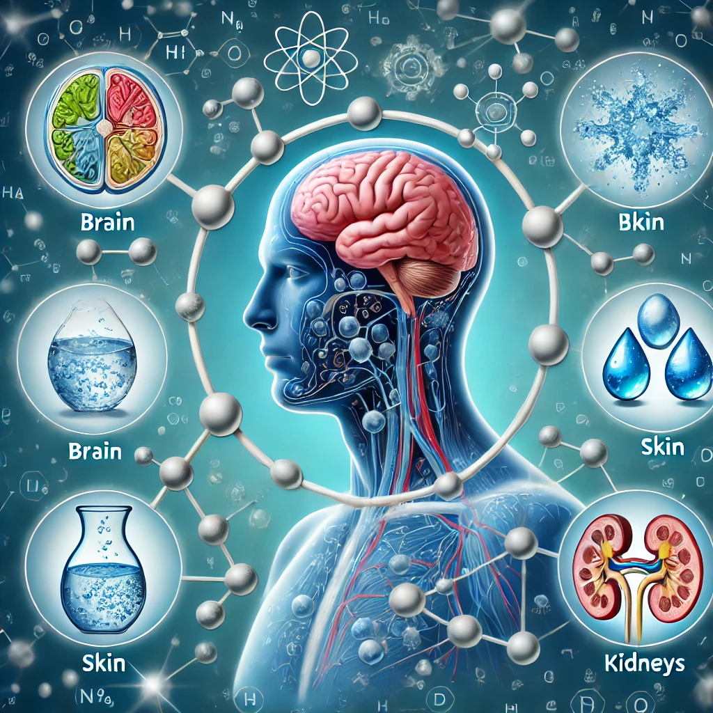
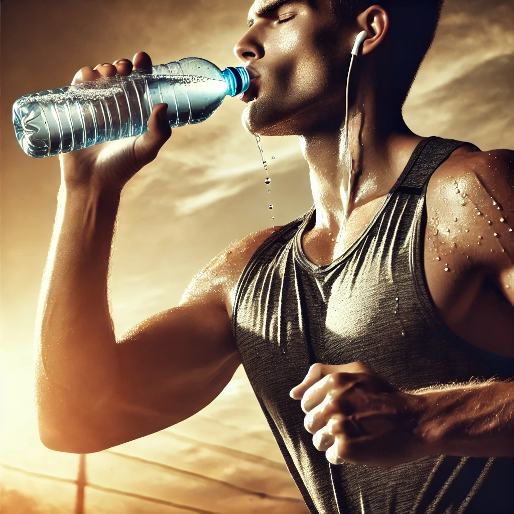
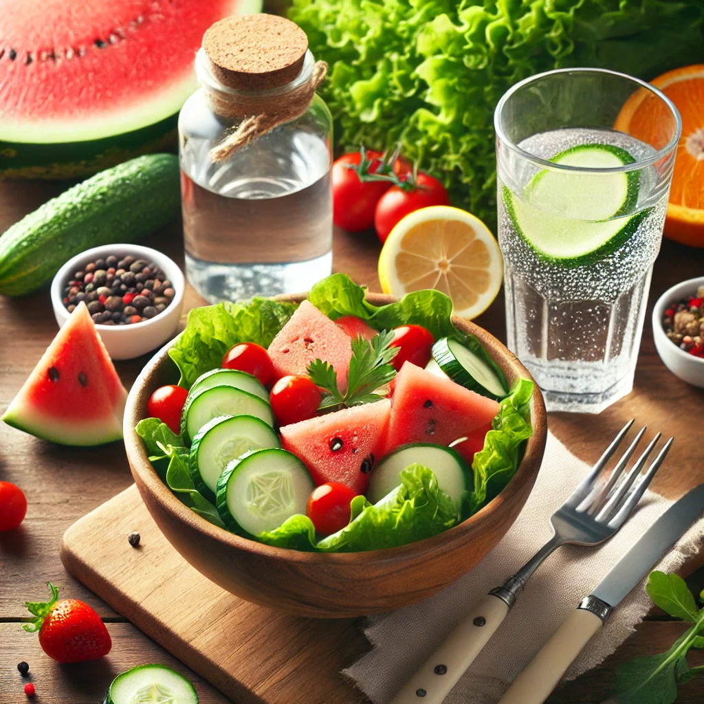

Drink more Water for Healthy Life
Water is essential to life, making up about 60% of our bodies. Yet, many people overlook its importance in maintaining overall health and wellness. Staying hydrated plays a pivotal role in ensuring that our bodies function optimally, from regulating temperature to maintaining skin health and even improving mental clarity. In this blog post, we’ll explore why drinking more water is one of the simplest yet most powerful steps you can take to improve your health and well-being.
1. The Science of Hydration
Water is involved in nearly every bodily function. It aids in digestion, helps transport nutrients, flushes out toxins, cushions joints, and maintains body temperature. Dehydration, on the other hand, can lead to a myriad of issues like headaches, fatigue, kidney stones, and even more severe health concerns. Hydration is not just about avoiding these problems, but about optimizing how we feel and perform on a daily basis.2. Benefits of Drinking Water
- Boosts Physical Performance: Dehydration can significantly reduce your strength, endurance, and focus. Athletes and those engaging in intense physical activity must prioritize water intake to avoid cramps, overheating, and decreased energy.
- Promotes Weight Loss: Often, we confuse thirst with hunger, leading to overeating. Drinking water can suppress appetite and boost metabolism. Studies suggest that drinking water before meals can reduce overall calorie intake, contributing to weight loss.
- Enhances Skin Health: Our skin is the largest organ, and it needs water to stay hydrated, smooth, and youthful. Adequate water intake helps flush out toxins that can cause acne and other skin issues. Hydration keeps your skin looking radiant and may delay the appearance of wrinkles.
- Improves Digestion: Drinking water is essential for maintaining a healthy digestive system. It helps break down food and promotes smooth bowel movements, reducing the chances of constipation.
- Supports Kidney Function: Your kidneys filter waste from your blood and excrete it through urine. Drinking enough water helps them do their job efficiently, reducing the risk of kidney stones and urinary tract infections.
- Elevates Mood and Mental Clarity: Even mild dehydration can affect your mood, energy levels, and cognitive function. Drinking enough water keeps your brain hydrated, improving concentration, alertness, and memory.

3. How Much Water Should You Drink?
The amount of water you need varies depending on several factors, including your activity level, climate, and individual health. A general guideline is to drink about 8 glasses (2 liters) of water a day, commonly known as the "8x8 rule." However, those who exercise frequently or live in hotter climates may need more. Listening to your body is key—drink when you're thirsty, and check your urine; a light yellow color is a good indicator of proper hydration.
Tips to Increase Water Intake
If you're struggling to drink enough water throughout the day, here are some tips:
- Carry a Water Bottle: Keeping a bottle of water with you at all times serves as a reminder to hydrate.
- Set Reminders: Use apps or phone alarms to remind you to drink water throughout the day.
- Infuse Your Water: Add slices of fruit, cucumbers, or herbs to your water for a refreshing flavor that encourages more consumption.
- Eat Water-Rich Foods: Incorporate hydrating foods like cucumbers, watermelon, oranges, and lettuce into your diet.
- Drink Before Meals: Having a glass of water before each meal can help control hunger and ensure you’re getting enough water.

5. Signs You’re Not Drinking Enough Water
It's easy to forget to drink enough water, especially if you're busy. But your body will often give you signals when you're dehydrated:
- Dry mouth and lips
- Dark yellow or strong-smelling urine
- Fatigue and dizziness
- Muscle cramps
- Constipation
- Headaches If you notice any of these signs, it’s important to increase your water intake.
Debunking Water Myths
- Myth: You Only Need Water When Thirsty: Thirst is a late sign of dehydration. By the time you feel thirsty, your body is already slightly dehydrated. It’s best to drink water regularly throughout the day.
- Myth: All Fluids Count Toward Hydration: While drinks like coffee, tea, and juice contain water, they may also contain sugar or caffeine, which can have dehydrating effects. Pure water is still the best source of hydration.
- Myth: Drinking More Water Will Cure All Health Issues: While drinking enough water is essential for health, it’s not a cure-all. Water helps your body function properly, but it should be part of a balanced approach to wellness that includes proper nutrition, exercise, and sleep.
7. Special Considerations
For certain individuals, hydration needs may vary:
- Pregnant or Breastfeeding Women: Women who are pregnant or breastfeeding need more water to stay hydrated and support the additional needs of their bodies and their babies.
- Athletes: Those engaging in vigorous exercise should consume more water, especially if sweating heavily. Sports drinks can help replenish electrolytes lost through sweat but should not replace regular water intake.
- Older Adults: As we age, our sense of thirst diminishes. Older adults should make a conscious effort to drink more water, even if they don’t feel thirsty.
Conclusion: Prioritize Your Hydration
Drinking water is one of the simplest and most effective ways to maintain and improve your health. From boosting energy and mental clarity to supporting skin and organ function, water is the foundation of wellness. So, next time you reach for a snack, consider whether you might just be thirsty. Make water a priority in your daily routine, and your body will thank you with better performance, improved health, and overall well-being. 